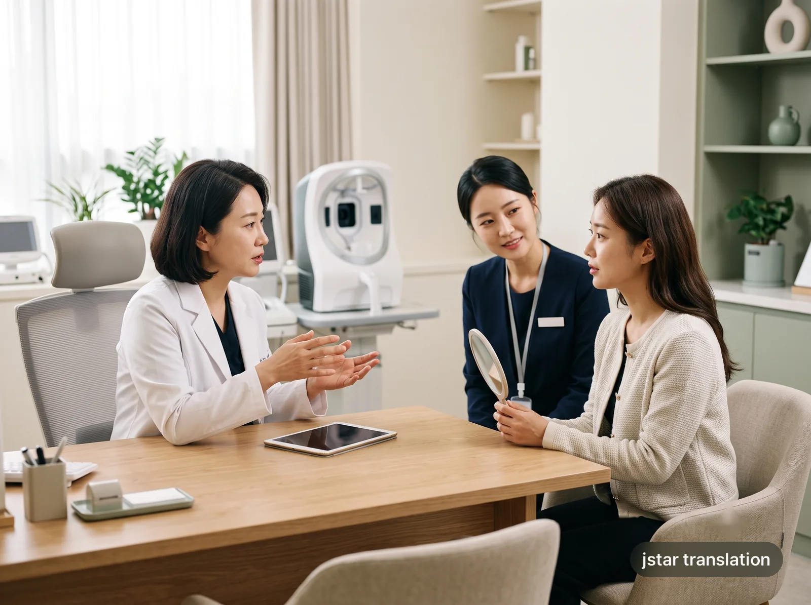

沒問完的問題
診療時間有限，想問的事沒問清，回國後才發現還有疑問。
沒問清、沒聽清，不必帶著擔心回國。
想問的沒問完，聽到的說明拿不準——有過這樣的經歷吧？

WHAT'S AT STAKE
在陌生的醫療環境裡，下面這些情況都可能發生。
診療時間有限，想問的事沒問清，回國後才發現還有疑問。
注意事項、禁忌與複診時間若聽錯或漏聽，可能影響術後護理。
同意書、費用與方案沒完全理解就簽字，事後容易產生分歧。
WHAT WE DO
根據科別、溝通難度、時間與地點媒合合適的口譯員，讓客戶、醫生與協調方始終在同一頁。
門診、檢查、方案說明、術前溝通與術後複診，全流程現場陪同。
清楚傳達療程差異、風險、預期、禁忌與護理重點。
支援多門店、多客戶與多時段安排，減少排班和溝通斷點。
診斷書、檢查報告、同意書、術後指導及機構資料翻譯。
OUR APPROACH
在陌生的國家面對醫療決定，緊張是很正常的。我們先理解就診目的與您的顧慮，再準確傳達、確認重點、減少誤解。
結合科別、療程與客戶顧慮理解真正意圖。
不誇大、不省略，保留醫生說明的專業邊界。
整理關鍵問題，幫助雙方確認理解一致。
一句話可以被翻譯，但一次醫療決定需要被真正理解。
WHO WE SUPPORT
FOR PATIENTS
不熟悉韓國醫療流程，也能有條理地完成諮詢、檢查與複診。
FOR CLINICS & AGENCIES
依客群、科別與排班需求協調合適口譯員，穩定客戶溝通體驗。
HOW IT WORKS
只需先提供科別、時間與地點。我們會確認需求後再媒合，不需要立即決定。
科別 · 日期 · 地點 · 所需範圍
核對難度、時長與行程細節
依經驗、科別與時間安排
陪同溝通，必要時整理後續重點
個人資料、就診資訊與現場溝通內容均依保密原則處理，僅用於本次服務安排。
如實傳達醫生的說明，不增添、不美化。
口譯員不提供醫療建議，治療與費用由您與醫生決定。
範圍與報價確認後才開始服務，可先諮詢，無需立即決定。
SELECTED SCENARIOS
以下為示例場景，並非真實個案，僅用於說明我們如何提供支援。

第一次在韓國做皮膚療程諮詢，擔心聽不懂療程差異和恢復期。我們逐項傳達醫生的說明，並把您想問的問題提前列好，當場確認。
重點：選擇依據清晰術前與複診最怕漏掉風險和護理要點。我們準確傳達風險、預期與術後護理，並在結束前與您再次確認理解一致。
重點：風險資訊不遺漏為診所或服務機構協調多名口譯員，統一變更與現場溝通窗口。
重點：減少排班斷點FAQ
沒有找到答案？可以先傳送科別、日期和地點，我們會確認後回覆。
可涵蓋初診、檢查說明、療程或手術諮詢、術前溝通、術後複診與護理說明，依實際需要安排。
可以先提供時間、地點與科別，我們會優先確認可用口譯員並儘快回覆。是否可安排以當日檔期為準。
根據時長、地點、科別難度、是否需要多日程排班及文件準備等因素報價，確認後再開始服務。
口譯員遵循保密原則，個人資料和診療內容僅用於服務安排與現場溝通，不對外公開。
可以。支援依門店、科別、客群和時段建立長期協作流程，也可先從單次服務開始。
支援診斷書、檢查報告、同意書、術後指導等中韓翻譯。請先傳送文件類型與頁數確認範圍。
不會。口譯員只負責準確傳達，不提供醫療建議，也不替醫生或您做決定。治療與費用由您與醫生決定。
不會。我們遵循不誇大、不省略的原則，保留醫生說明的專業邊界。
可以先告訴我們就診目的與顧慮，我們協助整理需要向醫生確認的問題清單。
不需要。可以先傳送科別、日期與地點了解情況，確認後再決定是否開始。
START A CONVERSATION
透過微信傳送“科別 / 日期 / 地點”，我們會根據情況確認可安排範圍。
cmdlabkr@gmail.com 免費下載《就診前問題清單》（PDF）P.S. 還沒決定也沒關係。先下載清單，帶著問題去就診，會更安心。